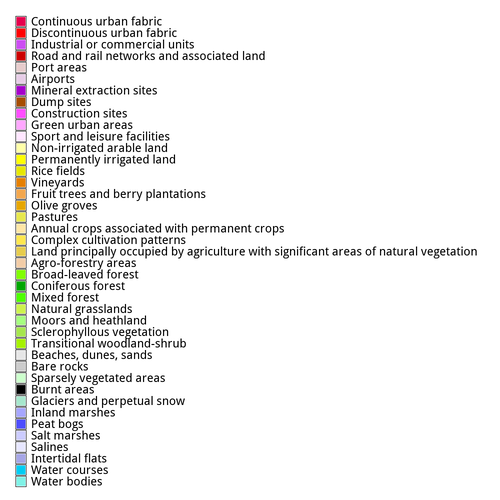
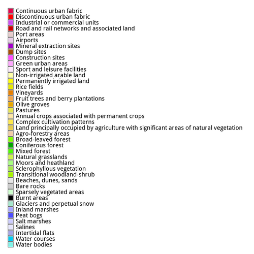

The algorithm estimates the capacity of ecosystems to provide opportunities for nature-based recreation and leisure (recreation opportunity spectrum). First, it bases upon look-up tables, to score access to or the quality of natural features (land suitability, protected areas, infrastructure, water resources) for their potential to support for outdoor recreation (potential recreation). Second, it implements a proximity-remoteness concept to integrate the recreation potential and the existing infrastructure.
The module offers two functionalities. One is the production of recreation related maps by using pre-processed maps that depict the quality of or the access to areas of recreational value. The other is to transform maps that depict natural features into scored maps that reflect the potential to support for outdoor recreational. Nevertheless, it is strongly advised to understand first the concepts and the terminology behind the algorithm, by reading the related sources.
The recreation potential map, derives by adding and normalizing maps of natural components that may provide recreation opportunities. Components are user-defined, pre-processed, input raster maps, that score access to or quality of resources such as:
Alternatively, the module treats unprocessed maps, by providing a set of relevant scores or coefficients, to derive component maps required by the algorithm. FIXME 1. an ASCII file with a set of land suitability scores (see below) 2. a string listing a set of comma-separated scores for each raster category.. -- FIXME 3. in the case of the CORINE map, use of internal rules FIXME For example, a CORINE land cover map may be given to the 'landuse' input option along with a set of land suitability scores, that correspond to the CORINE nomenclature. The latter is fed as an ASCII file to the 'suitability_scores' input option.
...
The recreation (opportunity) spectrum map, derives by combining the recreation potential and maps that depict access (i.e. infrastructure) and/or areas that provide opportunities for recreational activities.
Explain here significance of areas with the Highest Recreation Spectrum.
| Potential | Opportunity | Near | Midrange | Far |
|---|---|---|---|
| Near | 1 | 2 | 3 |
| Midrange | 4 | 5 | 6 |
| Far | 7 | 8 | 9 |
By integrating maps of regions of interest and population, the module supports the production of a series of demand and flow maps as well as exporting related supply and use tables.
The following equation represents the logic behind ESTIMAP:
Recreation Spectrum = Recreation Potential + Recreation Opportunity
( {Constant} + {Kappa} ) / ( {Kappa} + exp({alpha} * {Variable}) )
area_of_interest
land_suitability
water_resources
protected_areas
Below, a table overviewing all input and output maps used or produced in the examples.
| Input map name | Spatial Resolution | Remarks | |
|---|---|---|---|
| area_of_interest | 50 m | A map that can be used as a 'mask' | |
| land_suitability | 50 m | A map scoring the potential for recreation over CORINE land classes | |
| water_resources | 50 m | A map scoring access to water resources | |
| protected_areas | 50 m | A map scoring the recreational value of natural protected areas | |
| distance_to_infrastructure | 50 m | A map scoring access to infrastructure | |
| population_2015 | 1000 m | The resolution of the raster map given to the 'populatio' input option will define the resolution of the output maps 'demand', 'unmet' and 'flow' | |
| local_administrative_unit | 50 m | A rasterised version of Eurostat's Local Administrative Units map | |
| Output map name | Spatial Resolution | Remarks | |
| potential |
50 m | ||
| potential_1 | 50 m | ||
| potential_2 | 50 m | ||
| potential_3 | 50 m | ||
| potential_4 | 50 m | ||
| spectrum | 50 m | ||
| opportunity | 50 m | Requires to request for the 'spectrum' output | |
| demand | 1000 m | Depends on the 'flow' map which, in turn, depends on the 'population' input map | |
| unmet | 1000 m | Depends on the 'flow' map which, in turn, depends on the 'population' input map |
|
| flow | 1000 m | Depends on the 'population' input map | |
| Output table name | |||
| supply | NA |
Before anything, we need to define the extent of interest using
g.region raster=area_of_interest
land,
natural,
water
and infrastructure
resources.
To compute a potential output map,
the simplest possible command call
requires the user
to define the input map option
land and
define a name for the output map option
potential.
Using a pre-processed map
that depicts the suitability of different land types
to support for recreation
(here the map named
land_suitability)
the command to execute is:
r.estimap.recreation land=land_suitability potential=potential

Note,
this will process the input map
land_suitability
over the extent defined previously via
g.region,
which is the standard behaviour in GRASS GIS.
To exclude certain areas from the computations,
we may use a raster map
as a mask and feed it to the input map
option mask:
r.estimap.recreation land=land_suitability mask=area_of_interest potential=potential_1

area_of_interest
map assigned the NULL value).
Successively,
these areas will be empty in the output map
potential_1.
Actually,
the same effect can be achieved
by using GRASS GIS' native mask creation module r.mask
and feed it with a raster map of interest.
The result will be a raster map named MASK
whose presence acts as a filter.
In the following examples,
it becomes obvious that
if a single input map
features such No Data areas,
they will be propagated in the output map.
Nonetheless, it is good practice to use a MASK
when one needs to ensure
the exclusion of undesired areas
from any computations.
Also,
note the --o flag:
it is required to overwrite
the already existing map named
potential_1.
Next, we add a water component, a map named
water_resources,
modify the output map name to potential_2
and execute again, without a mask:
r.estimap.recreation land=land_suitability water=water_resources potential=potential_2

NULL cells present in the
"water" map, are propagated in the output map potential_2.
Following, we provide a map of protected areas named
protected_areas,
modify the output map name to
potential_3
and repeat the command execution:
r.estimap.recreation land=land_suitability water=water_resources natural=protected_areas potential=potential_3

While the land option
accepts only one map as an input,
both the water and the natural options
accept multiple maps as inputs.
In example,
we add a second map named
bathing_water_quality
to the water component and modify the output map name to
potential_4:
r.estimap.recreation land=land_suitability water=water_resources,bathing_water_quality natural=protected_areas potential=potential_4
In general, arbitrary number of maps, separated by comma, may be added to options that accept multiple inputs.

This example, features also a title and a legend, so as to make sense of the map.
d.rast potential_4 d.legend -c -b potential_4 at=0,15,0,1 border_color=white d.text text="Potential" bgcolor=white
The different output map names
are purposefully selected
so as to enable a visual
comparison of the differences
among the differenct examples.
The output maps
potential_1,
potential_2,
potential_3
and potential_4
range within [0,3].
Yet, they differ in the distribution of values
due to the different set of input maps.
All of the above examples base upon pre-processed maps that score the access to and quality of land, water and natural resources. For using raw, unprocessed maps, read section Using unprocessed maps.
spectrum,
we need in addition an
infrastructure
component.
In this example a map that scores distance to infrastructure (such as the road
network) named
distance_to_infrastructure
is defined as an input:

spectrum too:
r.estimap.recreation \ land=land_suitability \ water=water_resources,bathing_water_quality \ natural=protected_areas \ infrastructure=distance_to_infrastructure spectrum=spectrum \
r.estimap.recreation land=land_suitability water=water_resources,bathing_water_quality natural=protected_areas infrastructure=distance_to_infrastructure spectrum=spectrum
infrastructure map,
the command will abort and inform about.
The image above, was produced via the following native GRASS GIS commands
d.rast spectrum d.legend -c -b spectrum at=0,30,0,1 border_color=white d.text text="Spectrum" bgcolor=white
opportunity map
is actually an intermediate step
of the algorithm.
The option to output this map
opportunity
is meant for expert users
who want to explore
the fundamentals of the processing steps.
Hence,
it requires to define
the output option spectrum
map as well.
Building upon the previous command, we add the opportunity output
option:
r.estimap.recreation \ mask=area_of_interest \ land=land_suitability \ water=water_resources,bathing_water_quality \ natural=protected_areas \ spectrum=spectrum \ infrastructure=distance_to_infrastructure \ opportunity=opportunity
r.estimap.recreation mask=area_of_interest land=land_suitability water=water_resources,bathing_water_quality natural=protected_areas spectrum=spectrum infrastructure=distance_to_infrastructure opportunity=opportunity
demand distributiom,
unmet demand distributiom
and the actual flow,
additional requirements are
a population map
and one of boundaries,
as an input to the option
base,
within which to quantify the distribution of the population.
Using a map of administrative boundaries for the latter option,
serves for deriving comparable figures across these boundaries.
The algorithm sets internally the spatial resolution
of all related output maps
demand,
unmet and
flow
to the spatial resolution of the
population
input map.
Population

population_2015 is of
1000m^2.
Local administrative units

local_administrative_units
serves in the following example
as the base map for the zonal statistics to obtain the demand map.
r.estimap.recreation --o \ mask=area_of_interest \ land=land_suitability \ water=water_resources,bathing_water_quality \ natural=protected_areas \ infrastructure=distance_to_infrastructure \ demand=demand \ population=population_2015 \ base=local_administrative_units
r.estimap.recreation --o mask=area_of_interest land=land_suitability water=water_resources,bathing_water_quality natural=protected_areas infrastructure=distance_to_infrastructure demand=demand population=population_2015 base=local_administrative_units

r.estimap.recreation --o \ mask=area_of_interest \ land=land_suitability \ water=water_resources,bathing_water_quality \ natural=protected_areas \ infrastructure=distance_to_infrastructure \ demand=demand \ unmet=unmet_demand \ population=population_2015 \ base=local_administrative_units
r.estimap.recreation --o mask=area_of_interest land=land_suitability water=water_resources,bathing_water_quality natural=protected_areas infrastructure=distance_to_infrastructure demand=demand unmet=unmet_demand population=population_2015 base=local_administrative_units

The flow bases upon the same function used to quantify the attractiveness of locations for their recreational value. It includes an extra score term.
The computation involves a distance map, reclassified in 5 categories as shown in the following table. For each distance category, a unique pair of coefficient values is assigned to the basic equation.
| Distance | Kappa | Alpha |
|---|---|---|
| 0 to 1 | 0.02350 | 0.00102 |
| 1 to 2 | 0.02651 | 0.00109 |
| 2 to 3 | 0.05120 | 0.00098 |
| 3 to 4 | 0.10700 | 0.00067 |
| >4 | 0.06930 | 0.00057 |
Note, the last distance category is not considered in deriving the final "map of visits". The output is essentially a raster map with the distribution of the demand per distance category and within predefined geometric boundaries
r.estimap.recreation --o \ mask=area_of_interest \ land=land_suitability \ water=water_resources,bathing_water_quality \ natural=protected_areas \ infrastructure=distance_to_infrastructure \ mobility=mobility \ population=population_2015 \ base=local_administrative_units
r.estimap.recreation --o mask=area_of_interest land=land_suitability water=water_resources,bathing_water_quality natural=protected_areas infrastructure=distance_to_infrastructure mobility=mobility population=population_2015 base=local_administrative_units

r.estimap.recreation --o \ mask=area_of_interest \ land=land_suitability \ water=water_resources,bathing_water_quality \ natural=protected_areas \ infrastructure=distance_to_infrastructure \ potential=potential \ opportunity=opportunity \ spectrum=spectrum \ demand=demand \ unmet=unmet_demand \ mobility=mobility \ population=population_2015 \ base=local_administrative_units timestamp='2018'
r.estimap.recreation --o mask=area_of_interest land=land_suitability water=water_resources,bathing_water_quality natural=protected_areas infrastructure=distance_to_infrastructure potential=potential opportunity=opportunity spectrum=spectrum demand=demand unmet=unmet_demand mobility=mobility population=population_2015 base=local_administrative_units timestamp='2018'
Note the use of
the timestamp
parameter!
This concerns the spectrum map.
If plans
include working with GRASS GIS' temporal framework
on time-series,
this will be useful.
supply
and use
file name output options are defined.
In order to extract a supply table, the module requires maps
that enable the estimation of the actual flow and how each different ecosystem
type contributes, in terms of its areal extent, to this flow.
The dependencies to extract a supply table are the following:
land or water or naturalinfrastructurepopulationbaselandcoveraggregationsupply
An example command to derive a supply table is:
r.estimap.recreation \ land=land_suitability \ infrastructure=distance_to_infrastructure \ population=population_2015 \ base=local_administrative_units \ landcover=corine_land_cover_2006 \ aggregation=regions \ supply=supply
water component
r.estimap.recreation \ water=water_resources \ infrastructure=distance_to_infrastructure \ population=population_2015 \ base=local_administrative_units \ landcover=corine_land_cover_2006 \ land_classes=corine_accounting_to_maes_land_classes.rules \ aggregation=regions \ supply=supply
natural component:
r.estimap.recreation \ natural=protected_areas \ infrastructure=distance_to_infrastructure \ population=population_2015 \ base=local_administrative_units \ landcover=corine_land_cover_2006 \ land_classes=corine_accounting_to_maes_land_classes.rules \ aggregation=regions \ supply=supply
r.estimap.recreation --o mask=area_of_interest land=land_suitability water=water_resources,bathing_water_quality natural=protected_areas infrastructure=distance_to_infrastructure potential=potential opportunity=opportunity spectrum=spectrum demand=demand unmet=unmet_demand population=population_2015 base=local_administrative_units timestamp='2018' landcover=corine_land_cover_2006 aggregation=regions land_classes=../categories_and_rules/corine_accounting_to_maes_land_classes.rules supply=supply use=us
base,base_label,cover,cover_label,area,count,percents 3,Region 3,1,355.747658,6000000.000000,6,6.38% 3,Region 3,3,216304.146140,46000000.000000,46,48.94% 3,Region 3,2,26627.415787,46000000.000000,46,48.94% 1,Region 1,1,1466.340177,11000000.000000,11,9.09% 1,Region 1,3,13837.701610,10000000.000000,10,8.26% 1,Region 1,2,105488.837775,88000000.000000,88,72.73% 1,Region 1,4,902.359018,13000000.000000,13,10.74% 1,Region 1,7,53.747332,4000000.000000,4,3.31% 4,Region 4,1,26884.220460,65000000.000000,65,28.26% 4,Region 4,3,291863.216396,70000000.000000,70,30.43% 4,Region 4,2,48260.411774,92000000.000000,92,40.00% 4,Region 4,4,477.251251,7000000.000000,7,3.04% 2,Region 2,1,1113.270785,11000000.000000,11,10.19% 2,Region 2,3,157977.541352,58000000.000000,58,53.70% 2,Region 2,2,7701.208609,29000000.000000,29,26.85% 2,Region 2,4,3171.919491,15000000.000000,15,13.89% 5,Region 5,1,27748.714430,37000000.000000,37,44.58% 5,Region 5,3,133262.033972,31000000.000000,31,37.35% 5,Region 5,2,2713.756942,15000000.000000,15,18.07% 5,Region 5,4,677.823622,5000000.000000,5,6.02% 6,Region 6,1,14377.698637,31000000.000000,31,57.41% 6,Region 6,3,56746.359740,14000000.000000,14,25.93% 6,Region 6,2,4117.270100,13000000.000000,13,24.07%
use output option.
The module offers a pre-processing functionality for all of the following input components:
A first look on how this works,
is to experiment with
the landuse
and suitability_scores
input options.
Let's return to the first example, and use a fragment from the unprocessed
CORINE land data set, instead of the land_suitability map. This
requires a set of "score" rules, that correspond to the CORINE nomenclature, to
translate the land cover types into recreation potential.
 

In this case,
the rules are a simple ASCII file
(for example named corine_suitability.scores
that contains the following
1:1:0:0 2:2:0.1:0.1 3:9:0:0 10:10:1:1 11:11:0.1:0.1 12:13:0.3:0.3 14:14:0.4:0.4 15:17:0.5:0.5 18:18:0.6:0.6 19:20:0.3:0.3 21:22:0.6:0.6 23:23:1:1 24:24:0.8:0.8 25:25:1:1 26:29:0.8:0.8 30:30:1:1 31:31:0.8:0.8 32:32:0.7:0.7 33:33:0:0 34:34:0.8:0.8 35:35:1:1 36:36:0.8:0.8 37:37:1:1 38:38:0.8:0.8 39:39:1:1 40:42:1:1 43:43:0.8:0.8 44:44:1:1 45:45:0.3:0.3
suitability_scores option:
r.estimap.recreation landuse=corine_land_cover_2006 suitability_scores=corine_suitability.scores potential=potential_corine --o

r.estimap.recreation \ landuse=corine_land_cover_2006 \ suitability_scores="1:1:0:0,2:2:0.1:0.1,3:9:0:0,10:10:1:1,11:11:0.1:0.1,12:13:0.3:0.3,14:14:0.4:0.4,15:17:0.5:0.5,18:18:0.6:0.6,19:20:0.3:0.3,21:22:0.6:0.6,23:23:1:1,24:24:0.8:0.8,25:25:1:1,26:29:0.8:0.8,30:30:1:1,31:31:0.8:0.8,32:32:0.7:0.7,33:33:0:0,34:34:0.8:0.8,35:35:1:1,36:36:0.8:0.8,37:37:1:1,38:38:0.8:0.8,39:39:1:1,40:42:1:1,43:43:0.8:0.8,44:44:1:1,45:45:0.3:0.3" potential=potential_1 --o
suitability_scores option:
r.estimap.recreation landuse=corine_land_cover_2006 suitability_scores=corine_suitability.scores potential=potential_1 --o
suitability_scores optionLast changed: $Date: 2017-11-03 18:21:39 +0100 (Fri, 03 Nov 2017) $